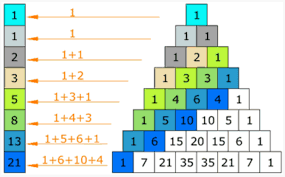

Regresar al menú
Serie o Sucesión de Fibonacci, solicite el límite al usuario
Fibonacci = 0, 1, 1, 2, 3, 5, 8, 13, 21, 34, 55, 89, 144, 233, 377, 610, 987

Ingrese una cantidad para generar:
Resultado: